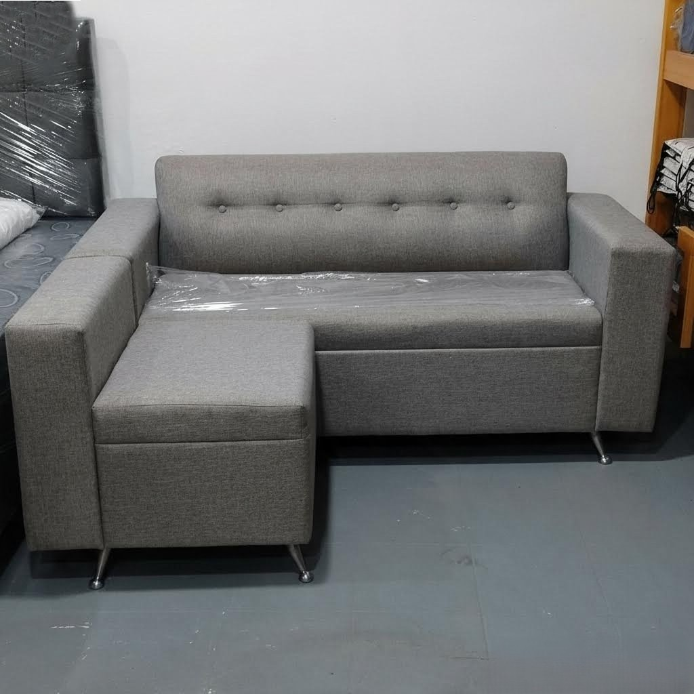
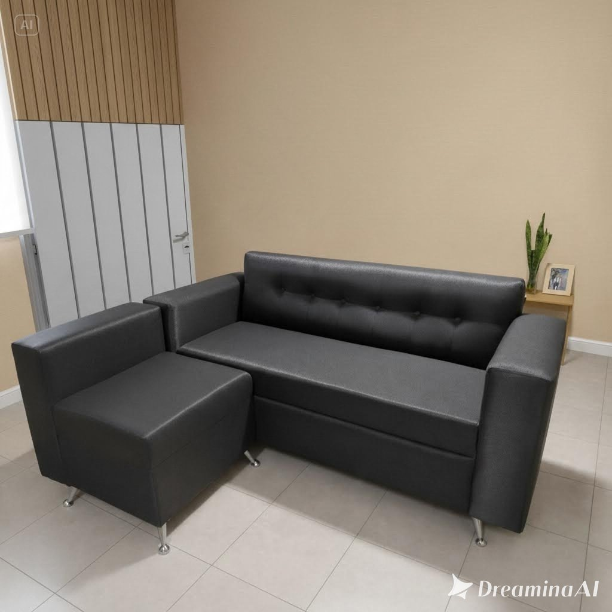
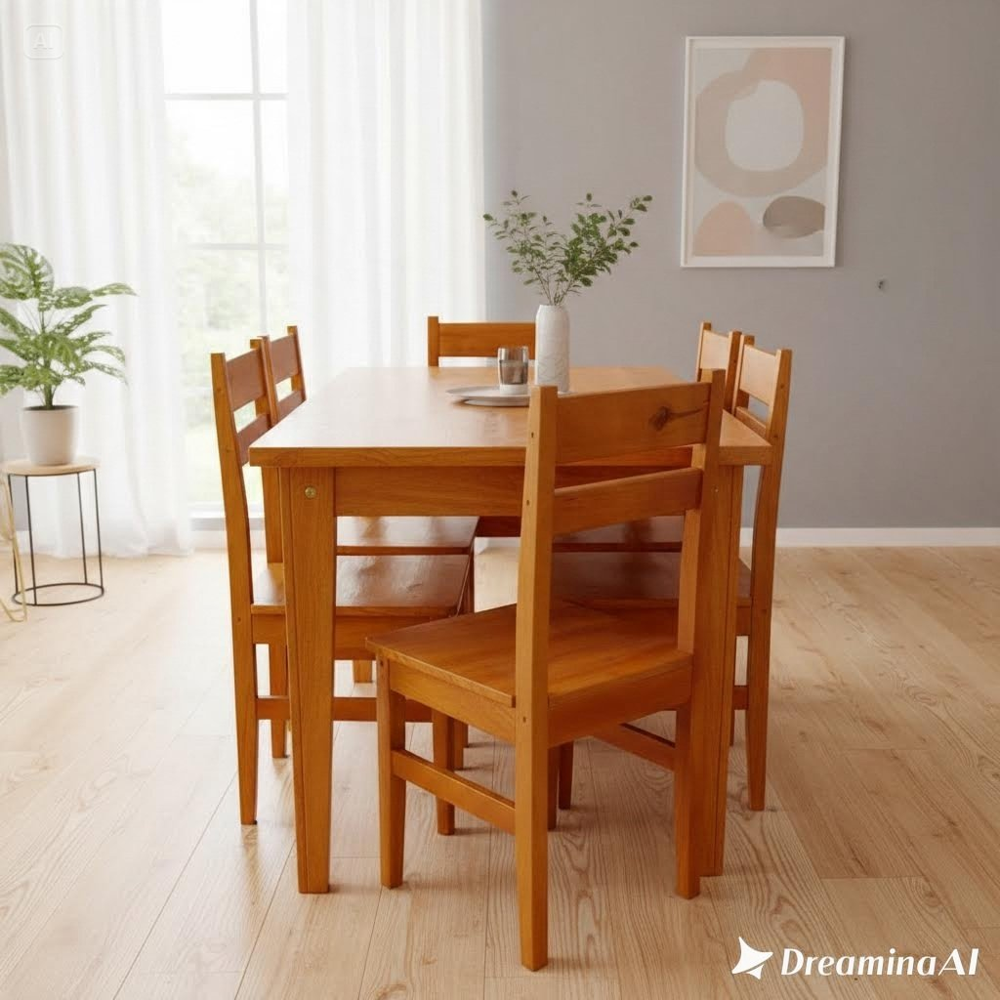
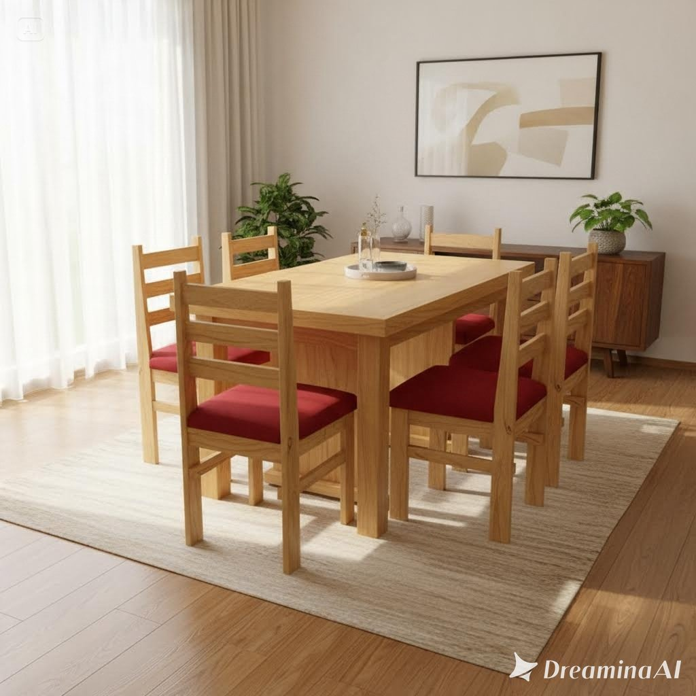
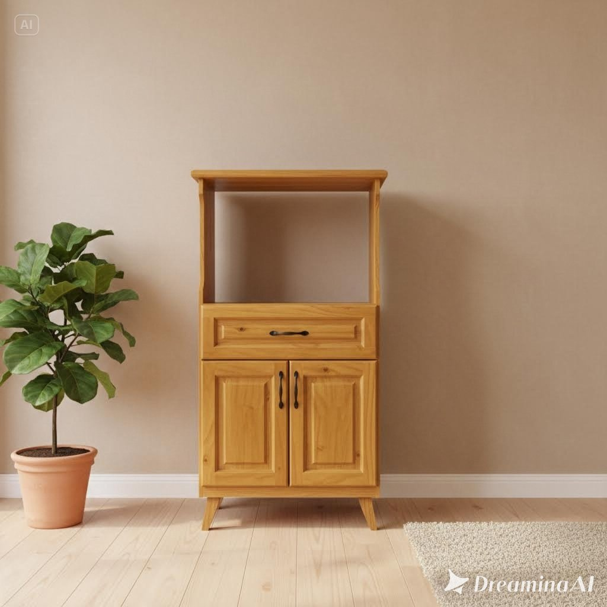
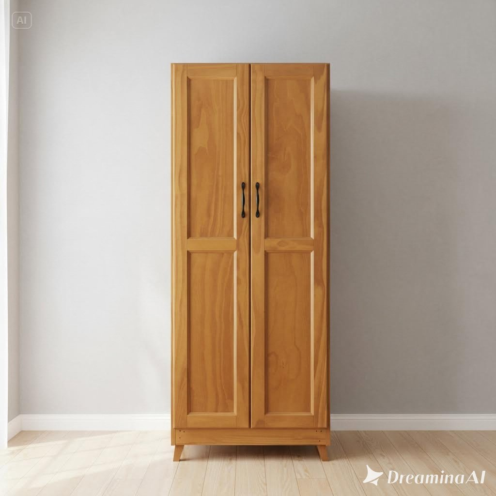
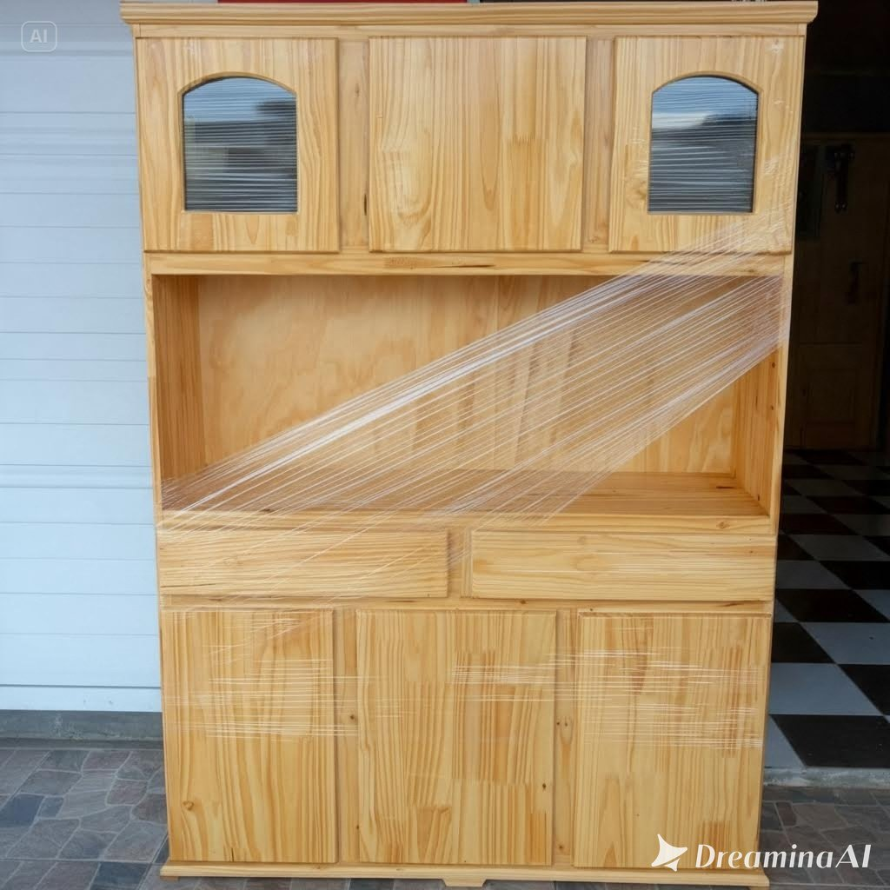
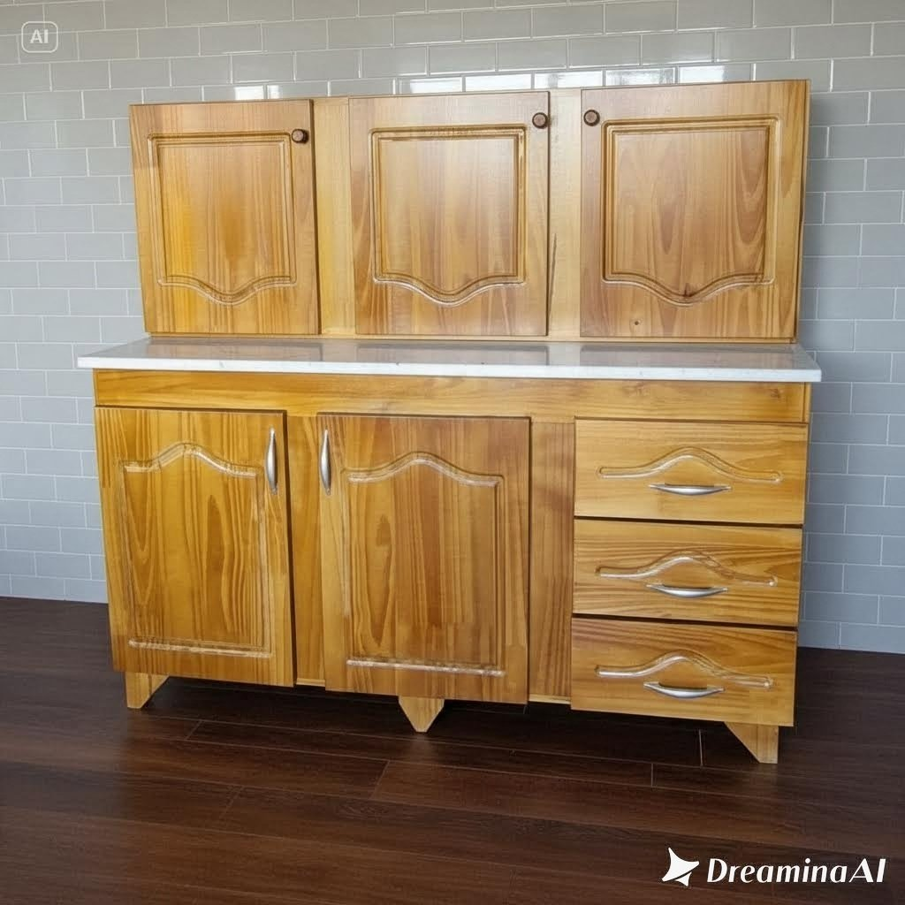
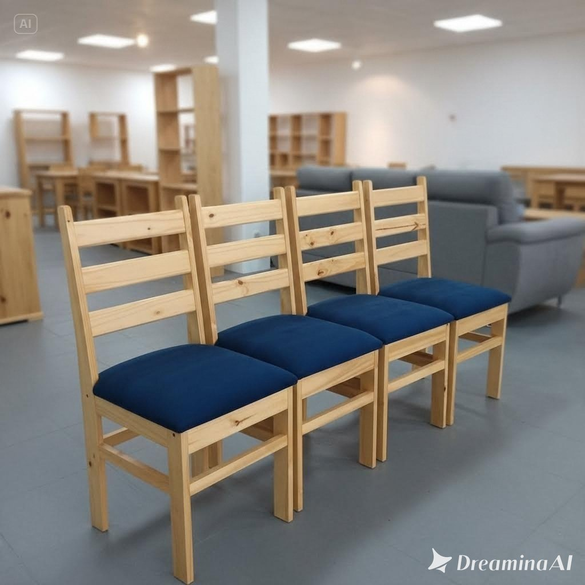

Sofá Esquinero
Comodidad, estilo y funcionalidad en un solo mueble. Ideal para aprovechar al máximo los espacios de tu living, este sofá esquinero ofrece amplitud y confort para disfrutar de momentos de descanso en familia o con amigos. Su diseño versátil se adapta a diferentes ambientes, aportando un toque moderno y acogedor a tu hogar.

Sofá Esquinero
Dale a tu living un toque de confort y elegancia. Este sofá esquinero es ideal para optimizar el espacio y disfrutar de mayor comodidad, ya sea para relajarte, compartir momentos en familia o recibir visitas. Su diseño práctico y acogedor combina funcionalidad y estilo, convirtiéndose en el complemento perfecto para tu hogar.

Juego de comedor
Elegancia, resistencia y calidez para tu hogar. Este juego de comedor, fabricado en madera maciza de pino, ofrece solidez y durabilidad, ideal para compartir comidas y momentos especiales en familia o con amigos. Su diseño clásico y natural combina estilo y funcionalidad, convirtiéndose en una excelente opción para disfrutar de tu comedor todos los días.

Juego de comedor Tapizado
Combiná elegancia, comodidad y calidad en un solo conjunto. Fabricado en madera maciza de pino, este juego de comedor se destaca por su resistencia y durabilidad. Sus sillas tapizadas brindan mayor confort y un toque de distinción, ideal para compartir momentos especiales en familia o con amigos.

Mueble Dispensero Para Horno
Práctico, funcional y versátil, ideal para optimizar el espacio de tu cocina. Cuenta con compartimentos para organizar alimentos y accesorios, además de un espacio especial para colocar un horno eléctrico o microondas. Su diseño compacto combina comodidad y organización, convirtiéndose en una excelente solución para mantener tu cocina ordenada y aprovechar cada rincón.

Mueble Dispensero Vertical
Práctico, moderno y funcional, ideal para aprovechar al máximo el espacio de tu cocina. Su diseño vertical ofrece diferentes compartimentos para organizar alimentos, utensilios y accesorios, manteniendo todo al alcance de la mano. Una excelente opción para combinar almacenamiento, comodidad y estilo, logrando una cocina más ordenada y organizada.

Aparador Grande
Amplio, elegante y funcional, ideal para sumar espacio de almacenamiento y organización a tu hogar. Su diseño ofrece gran capacidad para guardar vajilla, mantelería, utensilios y otros objetos, manteniendo todo ordenado y al alcance de la mano. Perfecto para comedores, livings o cualquier ambiente que necesite combinar practicidad, comodidad y estilo.

Combo Alacena y Bajomesada
Renová tu cocina con este práctico y funcional combo de alacena y bajo mesada. Ideal para aprovechar el espacio y mantener todo organizado, ofrece compartimentos para guardar utensilios, alimentos y accesorios de uso diario. Su diseño versátil combina comodidad, orden y estilo, convirtiéndose en una excelente opción para equipar tu cocina y darle un nuevo aire a tu hogar.

Sillas Tapizadas
Combiná resistencia, comodidad y estilo con estas sillas fabricadas en madera maciza de pino. Su estructura sólida garantiza durabilidad, mientras que sus asientos tapizados brindan mayor confort y un toque de elegancia. Ideales para comedores y distintos ambientes del hogar, son la opción perfecta para disfrutar de cada momento con comodidad y calidad.